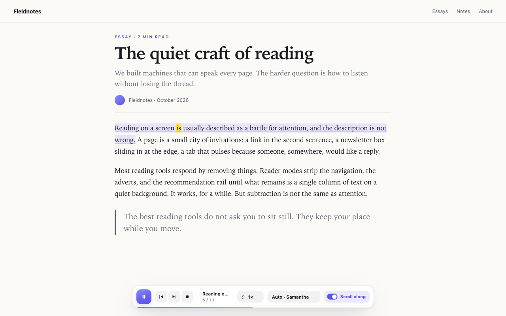
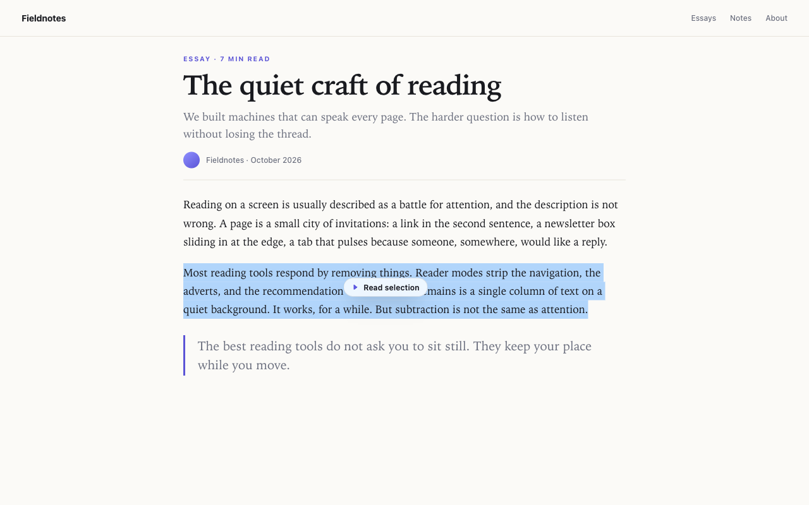
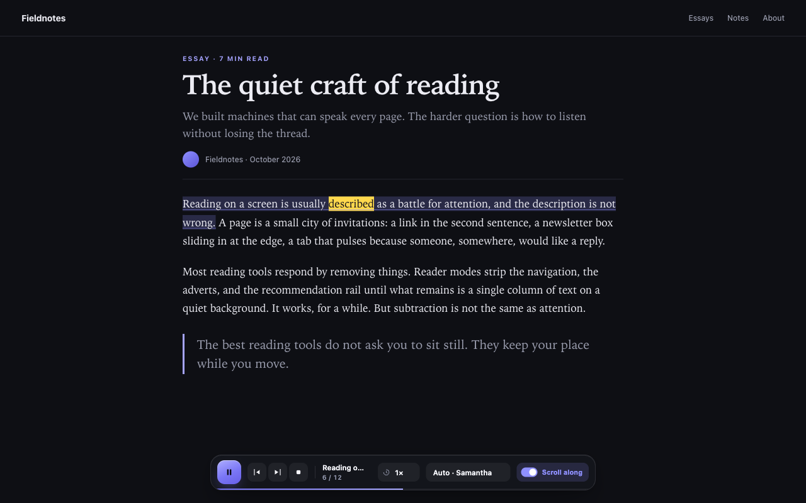

Word-by-word highlight
The spoken word is painted in the page itself. Follow along without hunting for where the voice went.
Chrome · Brave · Edge
Read Along reads the page you’re on, highlights each spoken word, and scrolls just enough to keep your place. Free, local, and quiet about it.

Why it feels different
Most read-aloud tools dump a wall of text into a voice. Read Along keeps you in the page, so your eyes and ears stay together.
The spoken word is painted in the page itself. Follow along without hunting for where the voice went.
The page moves only when the spoken line nears the edge. Scroll yourself and it backs off for a moment.
Option-click a paragraph, select a passage, or right-click and choose “Read from here.” No need to start at the top.
Auto picks a voice that matches the page, from Japanese to Hindi to German. Switch voices whenever you like.
Finds the real article and the real scroll container, including pages that scroll inside an inner pane.
No account, no analytics, no network requests. Page text is processed in memory and never leaves your device.
A closer look
The controls stay out of the way until you need them. The highlight is the only thing that moves.


Private by default
Read Along extracts the visible text in memory, speaks it with the voices already installed on your system, and throws it away when you stop. There is no server to send it to.
Read the privacy policyHow it works
No setup wizard, no import, no “create an account.” Open a page and press the shortcut.
An article, documentation, a blog post, a report. If the text is on the page, Read Along can usually find it.
On Windows or Linux, use AltShiftP. Reading starts from the first paragraph on screen, or from wherever you click.
Adjust speed, pick a voice, or turn off Scroll along. Your choices are remembered for next time.
Tip: Option-click any paragraph to start right there. Select a passage to get a small Read selection button, or right-click and choose Read from here.
Good to know
Yes. Read Along is free, with no account, subscription, or in-app purchase. It uses the speech voices already installed on your computer.
Yes. It was built and tested in Brave, and it also runs in Chrome, Edge, and other Chromium browsers. It will be installable from the Chrome Web Store once the listing is approved.
No. The extension makes no network requests. Page text is processed in memory for speech and highlighting, then discarded when you stop or leave the page. See the privacy policy for the details.
Those views draw text into a canvas or a browser-internal viewer, so there are no page text nodes to read. Regular articles, documentation sites, and blogs work. Text inside cross-origin iframes is also out of reach.
Any voice installed in your operating system. The Auto setting picks a voice that matches the page’s language. You can pick a specific voice from the bar at any time.
Read Along has been submitted to the Chrome Web Store and is currently in review. The install link will appear here and on the store listing once it has been approved. Reviews usually take a few business days.
Read Along is in review at the Chrome Web Store. Check back soon — or read the support page for shortcuts and troubleshooting.